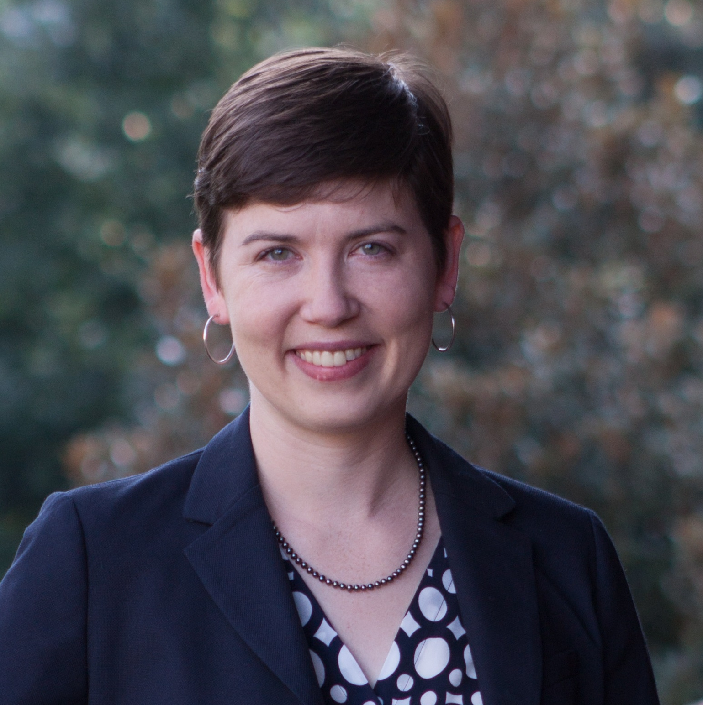
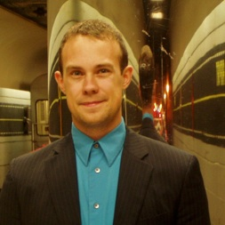
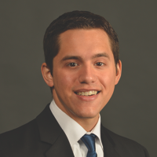
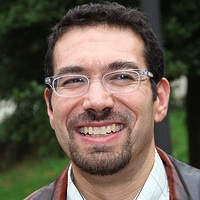
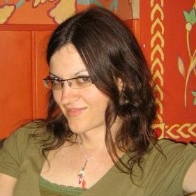
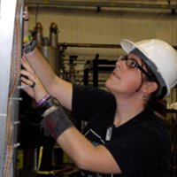
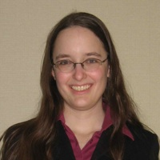
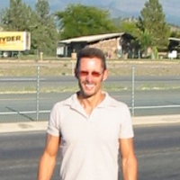
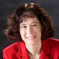

Mission Statement
LGBT+ Physicists publicly commit ourselves to building a scientific environment that is free from all forms of prejudice and discrimination. We commit ourselves to ensuring that this basic human right is upheld for members of our community who are also sexual minorities and/or gender minorities.
Become An Organizer
If you are interested in being an organizer, please e-mail us at info@lgbtphysicists.org.
Organizers
|  | Nicole AckermanProjects: APS March 2012 Meeting Session, Best Practives Guide v2 Nicole is an Assistant Professor of Physics at Agnes Scott College, a diverse (trans-inclusive) women's college outside of Atlanta, Georgia. She received her PhD from Stanford University in 2013, where she was a Diversifying Academia, Recruiting Excellence (DARE) Fellow. Her research focuses on studying radiation-based cancer imaging and therapy using Geant4. At Agnes Scott she is a member of the Safe Zone Committee and serves as the oSTEM advisor. |
|  | Tim AthertonProjects: Networking Events, APS March 2012 Meeting Session, Best Practices Guide Tim is Assistant Professor of Physics at Tufts University. His research group tries to understand the fundamental physics of soft matter—a broad class of things important to our everyday lives including soaps, foams, colloids, paints, gels, plastics, glues, liquid crystals and biological matter. Having attended one of the first meetings at APS March meeting 2011, Tim was one of the co-organizers of a special session on sexual and gender diversity issues in physics that took place at the 2012 APS March Meeting in Boston and wrote the ArXiV report from the session on behalf of the group. Since then, he’s been involved in co-authoring the best practice guide and facilitating roundtable networking events at subsequent March meetings. He’s the faculty advisor for the Tufts oSTEM chapter and continues to work to make Physics an inclusive community for gender and sexual minorities. |
|  | Ramón BarthelemyProjects: Best Practices Guide, National Climate Survey Ramón is currently a PhD student pursuing his doctorate in Science Education on a National Science Foundation AGEP fellowship. He holds a bachelors degree in Astrophysics from Michigan State University and a masters degree in Science Education from Western Michigan University. His research currently looks into the lives and educational pathways of women in astronomy and physics graduate programs. Additionally, he is part of a cross university team analyzing data from the Campus Pride Higher Education survey to uncover the climate and internal experiences of LGBT faculty and students in the sciences. |
Wouter DeconinckProjects: APS March and April Meeting Sessions, Best Practices Guide Wouter Deconinck has been a physics faculty member at the College of William & Mary since 2010. His research interests are in experimental nuclear physics, in particular the study of fundamental symmetries through low-energy electron scattering. Deconinck has been a co-organizer of sessions dedicated to gender and sexual diversity in physics at APS March and April meetings since 2011. At the 2012 AAPT/APS physics department chairs conference, Deconinck was invited to discuss issues of gender diversity. Previous efforts by Deconinck and colleagues at the Thomas Jefferson National Accelerator Laboratory have led the lab to include sexual orientation and gender identity in the EEO policy, and to extend benefits to same-sex domestic partners. |
|  | Michael FalkProjects: APS March 2012 Meeting Session, Networking Subcommittee, Facebook Manager Michael Falk is an Associate Professor in the departments of Materials Science and Engineering, Mechanical Engineering and Physics and Astronomy at Johns Hopkins University where he devises atomic scale computational methods for understanding non-equilibrium processes that govern deformation, failure, phase transitions and friction within and between materials. He also serves as advisor to the GLBT Graduate Students, JHU oSTEM (out in Science, Technology, Engineering and Mathematics) and the undergraduate Diverse Sexuality and Gender Alliance. He advised the student organizers of the 2011 B'More Proud Leadership Summit for which he received a Diversity Recognition Award from Johns Hopkins' Diversity Leadership Council. In 2008 he was presented with the National Organization of Gay and Lesbian Scientific and Technical Professionals (NOGLSTP) Educator Award. In 2012 he worked with this group to organize the first ever session addressing issues of sexual and transgendered minorities in physics at the American Physical Society's March Meeting. |
|  | Savannah GarmonProjects: APS March 2012 Meeting Session, Outlist Originally from the U.S., Savannah Garmon is an Assistant Professor of physics at Osaka Prefecture University in Japan. Her research interests focus on open quantum systems and applications in quantum optics and condensed matter theory. Savannah was one of the organizers of a special session on sexual and gender diversity issues in physics that took place at the 2012 APS March Meeting in Boston and she also chaired the session. She also writes on feminism and related issues from a trans woman's perspective, and shared her own story of her early personal experiences in physics here. Savannah grew up in North Carolina and received her Ph.D. from the University of Texas at Austin in 2007. |
|  | Elena 'Ells' LongProjects: LGBT+ Physicists Website, Networking Events, APS March 2012 Meeting Session, Best Practices Guide, OutList Elena is a Post Doctoral Research Associate at the University of New Hampshire, where she spends her time studying the internal structure of protons and neutrons through spin-polarized electron scattering experiments. Elena hosted the first ever meetings for LGBT+ physicists at an APS meeting beginning in 2010. Following the discussion from those initial meetings, she founded the LGBT+ Physicists website and discussion group. With the help of fellow organizers and with time generously granted by COM/CSWP, they helped to host the 2012 APS March Meeting session on Sexual and Gender Diversity Issues in Physics. Elena continues to be involved in efforts to make the climate in physics more welcoming towards LGBT+ individuals. |
|  | Diana ParnoProjects: Best Practices Guide Diana Parno is a postdoctoral researcher at the University of Washington's Center for Experimental Nuclear Physics and Astrophysics. As an experimental nuclear physicist, her research interests include neutrino mass, nucleon structure, and instrumentation. She received her PhD from Carnegie Mellon University in 2011. Diana is proud to contribute to the important work of the LGBT+ Physicists group. |
|  | Michael Ramsey-MusolfProjects: Best Practices Guide, National Climate Survey, Outlist Michael Ramsey-Musolf is currently a professor of physics at the University of Massachusetts Amherst and Director of the Amherst Center for Fundamental Interactions. His research concentrates on physics beyond the Standard Model at the interface of nuclear and elementary particle theory with cosmology and astrophysics, with a particular emphasis on the origin of the visible and dark matter of the universe. He also carries out theoretical research in various aspects of quantum chromodynamics. He obtained his Ph.D. from Princeton in 1989, received the 1990 Dissertation Award in Nuclear Physics, and was awarded an NSF Young Investigator grant. He is a fellow of the American Physical Society. Michael was also ordained an Episcopal priest in 1994 and has served in a non-stipendiary capacity at various churches throughout the U.S., with a particular focus on empowerment of at-risk youth. He spoke at the inaugural APS session on Gender and Sexuality Issues in Physics and recently authored an article on the interface of science, faith, and sexuality for the Madison GLBTQ+ monthly Our Lives. For additional details on his advocacy work, see http://people.umass.edu/mjrm/outreach.htm. |
|  | Elizabeth H. SimmonsProjects: Best Practices Guide, OutList, Networking Dr. Elizabeth H. Simmons is Professor of Physics in the Michigan State University Department of Physics and Astronomy and Dean of MSU's Lyman Briggs College, a four-year residential undergraduate science college that focuses on the study of science in its historical, philosophical, and sociological context. Simmons is a particle theorist, whose research focuses on the origins of the masses of the elementary subatomic particles, especially the top quark. She is currently studying how physics beyond the Standard Model might manifest itself in experiments in progress at the Large Hadron Collider. She enjoys teaching physics courses at all levels, from introductory to graduate, and is presently teaching mathematical physics to juniors in physics, astronomy, and engineering. Part of her mission as an educator is to encourage students from groups under-represented in physics to consider studies and careers in the physical sciences. After completing her undergraduate degree in physics at Harvard University magna cum laude and being inducted into Phi Beta Kappa, Simmons earned an M.Phil. in physics at Cambridge University as a Churchill Scholar. She returned to Harvard for her doctoral degree and postdoctoral fellowship, and then spent a decade as a professor at Boston University before joining the MSU faculty in summer 2003. She is a Fellow of the AAAS, a Fellow and Outstanding Referee of the American Physical Society, a General Member of the Aspen Center for Physics, and a Trustee of Summer Science Program, Inc. She won the ACE Michigan Network's Distinguished Woman in Higher Education Leadership Award in 2005 and served as a US Delegate to the International Conference on Women in Physics in 2008 (Korea) and 2011 (South Africa). |